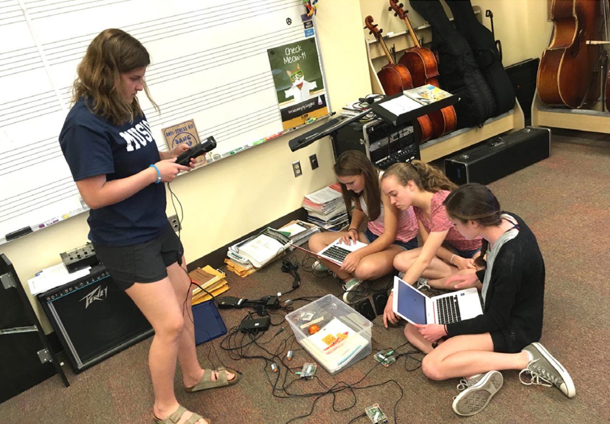

K-12 STEAM Education
MAKING POSTCARDS FROM SPACE WITH PAPER CIRCUITS @ INTERPLANETARY 2019
Hosted a STEAM booth at the Santa Fe Institute's second annual Interplanetary Festival. Our booth let kids and their families design "postcards from space" where they would imagine that they are space travelers writing postcards to their friends and families back home on Earth. We provided postcards, art supplies, and paper circuit supplies like copper tape, coin cell batteries, and LEDs. We guided visitors how to make their first paper circuits to light up an LED and let them choose how to creatively integrate it into their postcards.


BUILD-YOUR-OWN PET TOYS AND SUPPLIES 2018
Co-facilitated a multi-day workshop for high schooler students to design, engineer, and program interactive toys and objects for their pets.

INTERACTIVE PHYSICAL COMPUTING FOR MIDDLE SCHOOLERS 2017
Co-designed a middle school curriculum around using a physical computing toolkit to create music and/or games that use real-time input from sensors to control lights and actuators.
